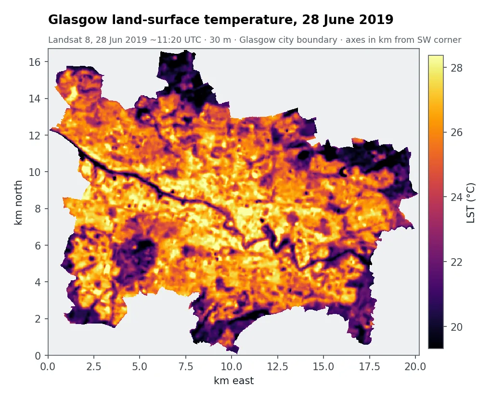
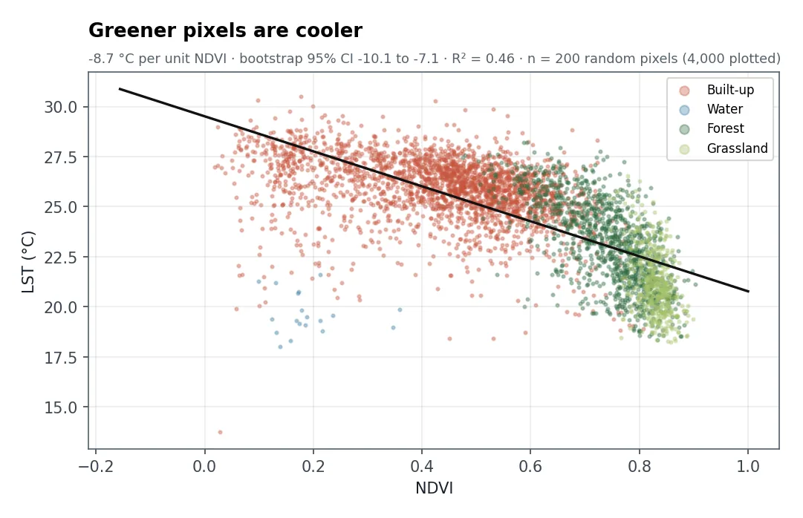

The question
Councils planning street trees, green roofs and parks need to know where extra greenery would cool the city most. Heat affects health and comfort, and budgets are limited.
What I did
- Measured surface temperature (LSTLand-surface temperature: how hot the ground and roofs are, measured from thermal infrared. It isn't the air temperature people feel.) from Landsat 8's thermal band, correcting for how different surfaces emit heat.
- Mapped vegetation and land cover: NDVINormalised Difference Vegetation Index: (near infrared − red) ÷ (near infrared + red). Higher values mean more, healthier vegetation. from the red and near-infrared bands, and a classification into built-up, water, forest and grassland.
- Measured the cooling effect of greenery with a regression of temperature on NDVI from 200 random pixels, with a bootstrapResampling the data many times to see how much a result could vary by chance, which gives a confidence interval. confidence interval.
- Ranked priority areas: built-up pixels that are both hot (well above the city average) and low in vegetation.
- Estimated what greening would buy for small, medium and large increases in NDVI.
What the maps show


Built-up land averaged 25.9 °C at the surface on 28 June 2019, against 21.3 °C for grassland. Greener pixels are clearly cooler: about 0.9 °C for every 0.1 increase in NDVI (95% interval 0.7 to 1.0 °C).
Raising NDVI by 0.10 across the 25.5 km² of priority land, for example with street trees and green roofs, would cool its surface by roughly 0.9 °C (0.7 to 1.0 °C). Try other values in the interactive tool on the home page.
How sure can we be?
- Surface, not air. Satellites measure how hot roofs and roads are, not the air temperature people feel.
- One sunny morning. A single image captures one moment, not a whole summer.
- Association, not cause. The cooling figures assume the city-wide relationship holds locally. They're for screening, not a promise for any one street.
- Small water bodies are under-mapped at 30 m resolution.
What a client gets
- Temperature and vegetation maps for the whole city
- A ranked map of priority areas for greening
- Cooling scenarios with uncertainty ranges
- An interactive dashboard to explore options with stakeholders